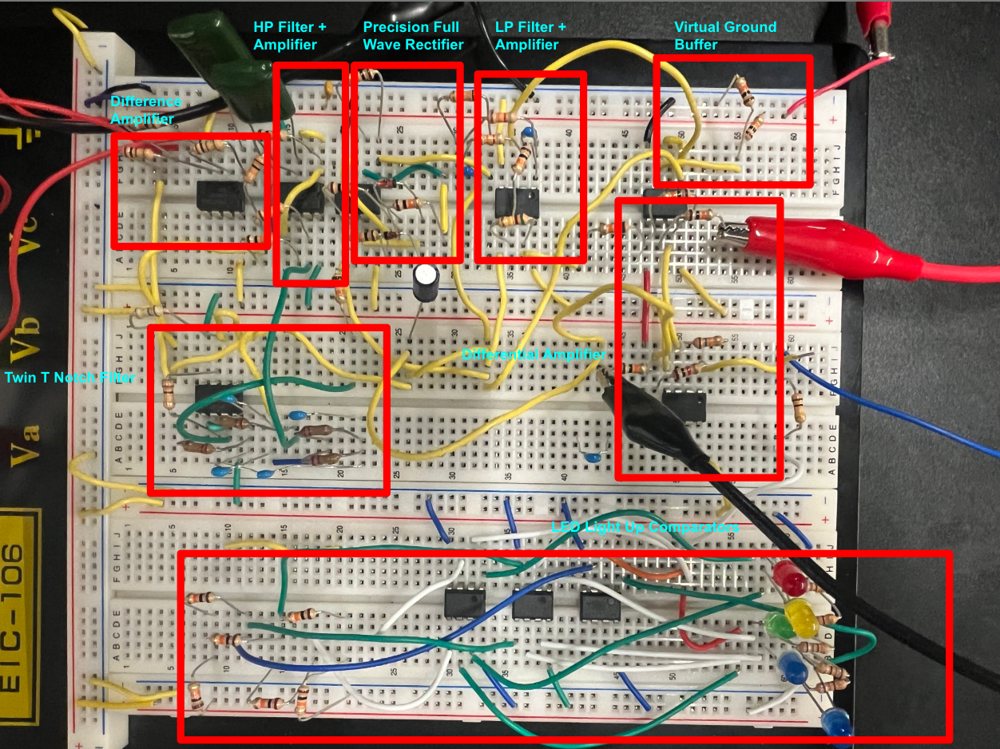
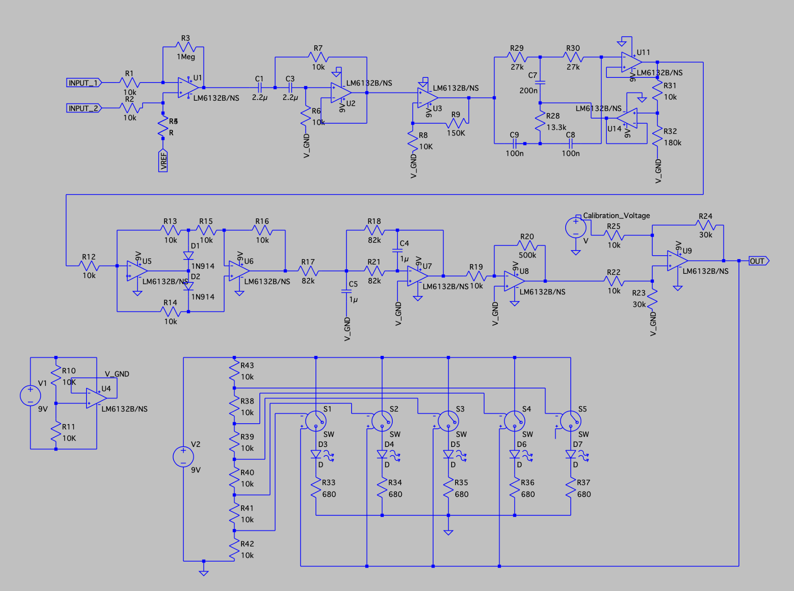
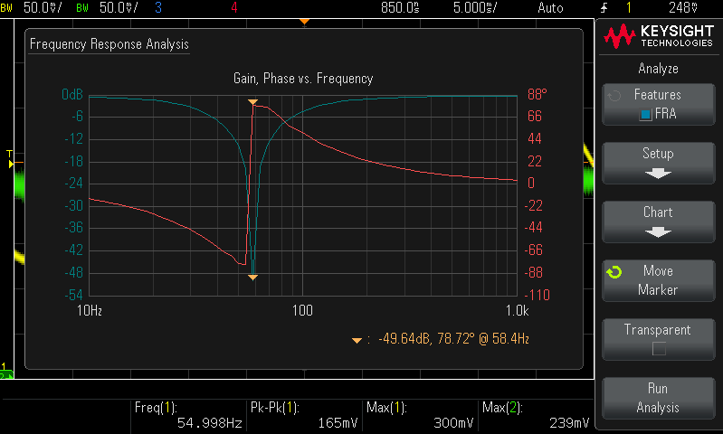
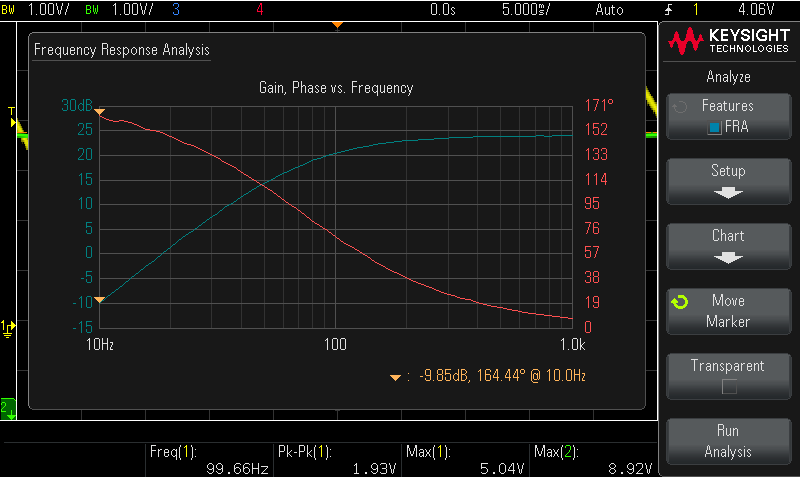
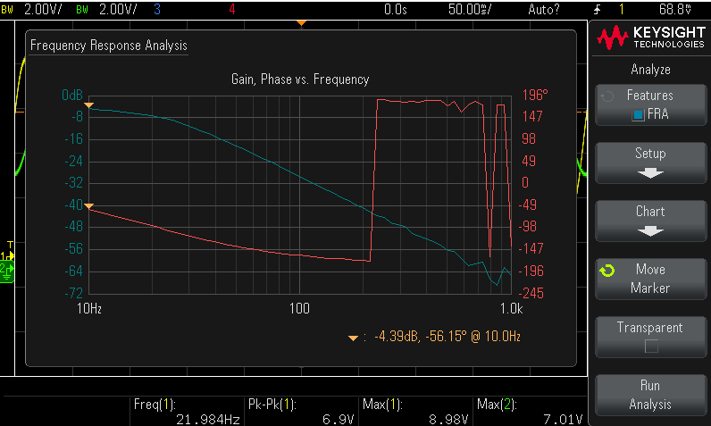
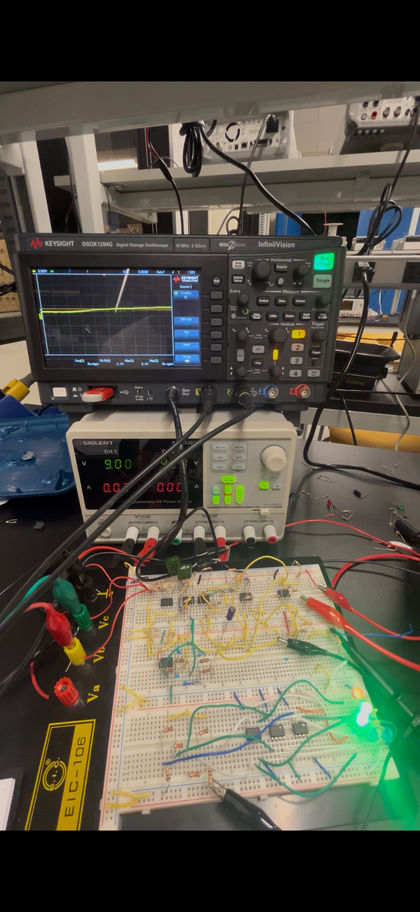

Surface electromyography (EMG) measures the electrical activity a muscle produces when it contracts. The signal at the skin is roughly 100 µV to 2 mV peak-to-peak, and it arrives buried under motion artifacts, electrode drift, and 60 Hz mains pickup that are often larger than the signal itself. Extracting anything usable from it is an exercise in gain distribution, band-limiting, and noise rejection.
For our 6.2040 final project, my partner and I built a fully analog EMG detection system — no microcontroller, no DSP. My half was the signal cleaning and acquisition chain: everything from the electrodes through to a calibrated 0–9 V DC envelope proportional to contraction strength, plus the LED bar-graph display used to visualize it. My partner built the downstream decision logic that consumes the cleaned envelope.
The chain runs from a single 9 V supply. That was a safety decision as much as a practical one: the intent was for the system to be battery-powered if ever applied to a person, limiting plausible fault current into the body. The cost is that there is no negative rail, so every node that would naturally sit at ground instead sits at a 4.5 V virtual ground, generated by a buffered resistor divider and used as the reference for every stage.
| Input signal | ~100 µV – 2 mV pk-pk differential, at the electrodes |
| Output | 0 V (rest) to ~9 V (maximum voluntary contraction), DC envelope |
| Total gain | ~240,000× (~108 dB) — 1,600× before rectification, 150× after |
| High-pass corner | −3 dB at ~7 Hz (2nd-order Sallen-Key, Q ≈ 0.5) |
| Mains notch | ~59 Hz, Q ≈ 5, >30 dB measured rejection |
| Envelope bandwidth | −3 dB at ~2 Hz (~80 ms smoothing time constant) |
| Front-end CMRR | Not characterized. Bounded by resistor matching, not by the op-amp — reaching the ~80 dB this topology is capable of requires better than 0.1% matching, and the build used 5% parts. See Limitations. |
| Input impedance | ~10 kΩ, set by the difference amplifier's input resistors |
| Power supply | Single 9 V rail, 4.5 V buffered virtual ground; LM6132 rail-to-rail op-amps throughout |
Two signal electrodes are placed roughly three inches apart along the flexor carpi radialis on the forearm, with a reference electrode on the bony prominence of the elbow. As grip force increases, the output envelope rises and the LED bar lights in sequence.
Nine stages, in order. Gain is distributed deliberately rather than concentrated — the reasoning is in the next section.
| # | Stage | Topology | Gain | Key parameters |
|---|---|---|---|---|
| 1 | Differential front end | One-op-amp difference amplifier | 100× | 10 kΩ / 1 MΩ matched pairs; three-electrode (two signal, one body reference) |
| 2 | High-pass filter | 2nd-order Sallen-Key, unity gain | 1× | −3 dB at ~7 Hz, Q ≈ 0.5 (no peaking) |
| 3 | Post-amplifier | Non-inverting | 16× | 10 kΩ / 150 kΩ; preserves polarity through the chain |
| 4 | Mains notch | Active Twin-T with positive feedback | 1× | ~59 Hz, Q ≈ 5, >30 dB measured rejection |
| 5 | Rectifier | Two-op-amp precision full-wave (absolute value) | 1× | Diodes inside the feedback loop — effective threshold on the order of microvolts, not the 0.6 V diode drop |
| 6 | Envelope low-pass | 2nd-order multiple-feedback | −1× | −3 dB at ~2 Hz → ~80 ms smoothing time constant |
| 7 | Envelope amplifier | Inverting | −50× | 10 kΩ / 500 kΩ; restores polarity, supplies the bulk of post-rectifier gain |
| 8 | Output stage | Difference amplifier + offset potentiometer | 3× | Subtracts the resting DC level so rest = 0 V; scales full contraction to the 9 V rail |
| 9 | Display | Five LM393 comparators, resistor-ladder thresholds | — | 1.5 V steps; open-collector outputs driving five LEDs |
| End-to-end small-signal gain | ~240,000× | ~108 dB — 1,600× before rectification, 150× after | ||
The textbook front end for a biopotential measurement is a three-op-amp instrumentation amplifier — buffered high-impedance inputs, far better CMRR. I used a one-op-amp difference amplifier instead. The reasoning was that a dedicated 60 Hz notch would be necessary downstream regardless of how good the front-end CMRR was, so spending parts to push CMRR further would not change what the chain could actually do. That reasoning holds for mains rejection specifically, but it turned out to have a real cost on input impedance and on how much work the notch had to do. I discuss that under Limitations.
The chain applies 1,600× before the rectifier and 150× after it, and that split is not arbitrary. Adding more gain upstream of the notch would amplify residual mains content past the point the notch could recover it — the notch has finite depth, so whatever 60 Hz survives the front end gets multiplied by everything downstream. Adding gain after rectification and envelope filtering is nearly free by comparison: at that point the signal is quasi-DC, high-frequency interference has already been smoothed away, and the full output swing can be spent on the envelope itself. So the bulk gain (−50×) sits at stage 7, not stage 1.
Full-wave rectification doubles the fundamental frequency at the output, which relaxes the requirement on the envelope low-pass that follows. And a half-wave rectifier throws away half the signal energy, which would have to be made up with gain elsewhere. A passive diode rectifier was never viable here — the signal at that node is tens to hundreds of millivolts, well under the 0.6 V forward drop of a 1N914, so a passive rectifier would simply have clipped everything of interest. Putting the diodes inside the op-amp's feedback loop divides the effective threshold by the open-loop gain, bringing it down to the microvolt scale.
The high-pass is unity-gain Sallen-Key at Q ≈ 0.5, deliberately chosen for a flat, Bessel-like response with no peaking at the corner. A higher-Q response would have peaked right where motion artifacts live, amplifying exactly the content the filter exists to suppress. It is also non-inverting, which preserved polarity through the early stages and made scope debugging considerably easier.
The envelope low-pass uses multiple-feedback instead. At 82 kΩ and 1 µF the impedances are high enough that op-amp input bias current starts to matter, and MFB is less sensitive to it than Sallen-Key in that regime. The ~2 Hz corner was chosen against the human timescale: ~80 ms is fast enough that the output tracks changes in effort within about a tenth of a second, but slow enough to suppress the 30–450 Hz EMG carrier and the rectifier's harmonics. Faster, and carrier ripple leaks into the output; slower, and the display feels sluggish.
A passive Twin-T has a Q around 0.25 — the notch is so wide that it takes the EMG band down along with the mains interference. Wrapping the network in a positive feedback loop with a 10 kΩ / 180 kΩ divider gives a feedback factor of 0.947, which raises Q to roughly 5. That narrows the notch enough to remove 60 Hz while leaving the surrounding EMG content intact.
Each filter stage was characterized individually on the bench by injecting a sine referenced to the virtual ground at the stage input and sweeping frequency while measuring output amplitude on the oscilloscope.
System response, measured on a human subject with a 9 V bench supply and the offset potentiometer trimmed so that rest reads 0 V:
| Condition | Output | LEDs lit |
|---|---|---|
| Forearm relaxed, fingers extended | ~0 V | 0 of 5 |
| Light contraction (fingers gently curled) | ~mid-scale, settling within 100–150 ms | 2–3 of 5 |
| Maximum voluntary contraction (clenched fist) | ~9 V (upper rail) | 5 of 5 |
| Slowly modulated grip force | Smooth tracking, no flicker at threshold crossings | Proportional |
The chain remained stable across test sessions of tens of minutes with no re-calibration required mid-session.
Click any image to open it full size.

The chain on protoboard, with each stage labeled

Full LTspice schematic of the signal chain

Measured response of the active Twin-T notch — ~59 Hz, >30 dB

Measured response of the Sallen-Key high-pass — ~7 Hz corner

Measured response of the MFB envelope low-pass — ~2 Hz corner

Circuit in operation — LED bar and scope output across contraction states
Before the active Twin-T was functioning, mains pickup was very visible on the scope at every probe point past the second gain stage — unsurprising in hindsight, since 1,600× of gain sits ahead of the notch and amplifies whatever common-mode interference the front end fails to reject. Twisted-pair electrode leads and routing them away from the bench power strip helped at the margin. The notch itself was the actual fix.
Several stages that simulated correctly behaved erratically on the bench because a node that should have referenced the 4.5 V virtual ground had been wired to actual ground instead. The symptom was consistent and unhelpful: the output stuck at 0 V or saturated at 9 V regardless of input. The fix was almost always the same — trace every node back to its reference and confirm that AC paths terminate at V_GND, not at GND. This was the single most repeated mistake in the build, and the lesson generalizes: in single-supply design, every "ground" symbol on a schematic is a question, not an answer.
The first build notched at roughly 55 Hz with noticeably shallow attenuation. Both the center frequency and the depth of a Twin-T depend on tight matching between the R and C pairs, and standard-tolerance parts were not good enough. Without access to precision components, I measured individual parts and hand-selected the closest-matching set, which pulled the center back to ~59 Hz and deepened the notch past 30 dB. This was the clearest instance of a broader pattern in this build: every block that depended on component matching showed a persistent gap between the theoretical result and what actually appeared on the scope.
The chain works, but several parts of it are clearly first-pass solutions. Listed roughly in order of how much benefit I think each would deliver.
The single biggest improvement would be replacing the discrete one-op-amp difference amplifier with an integrated instrumentation amplifier — an AD620, INA128, or INA333. The discrete topology tops out around 80 dB CMRR, and only if the 10 kΩ and 1 MΩ pairs are matched to better than 0.1%. The build used 5% resistors, so the real front-end CMRR was almost certainly well short of that, and the resulting 60 Hz common-mode-to-differential conversion was a meaningful contributor to the mains pickup the notch then had to clean up.
An AD620 specifies 100 dB CMRR at 60 Hz with a single external gain-setting resistor, and its input impedance is on the order of 10 GΩ rather than the ~10 kΩ my discrete stage presents — which matters, because skin-electrode contact impedance ranges from tens of kΩ to around 1 MΩ. The higher input impedance would also let me drop or greatly reduce the 10 kΩ input resistors, lowering their Johnson noise contribution at the most sensitive point in the chain. The trade-offs are cost, and the loss of pedagogical clarity: a monolithic INA is a black box, whereas the discrete topology makes the CMRR-matching network visible and adjustable.
The leads in the current build are unshielded alligator-clip jumper wires. Capacitive coupling from nearby mains-powered equipment into these leads was, in my estimation, the largest single contributor to 60 Hz pickup. Shielded cable with the shield driven at the common-mode potential — a guarded or driven-shield configuration — would substantially reduce that coupling, and it is close to free in parts cost.
The current build is entirely on protoboard, and the long, uncontrolled wiring picks up measurable noise. A proper PCB with continuous GND and V_GND planes would lower the noise floor and make the design reproducible rather than a one-off.
Every matched-network block in the chain — the difference amplifier, the Twin-T, the rectifier's five 10 kΩ resistors — is limited by how well its components match, not by its topology. Moving to 1% resistors and 5% C0G ceramic capacitors would close most of the gap between the theoretical and measured performance without changing a single design decision.
The complete report covers both halves of the system: my signal cleaning and acquisition chain, and my partner's downstream decision logic. It includes full schematics, component values and derivations, simulation results, and the measured Bode plots for every filter stage.
Download Full Report (PDF)